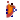
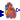

Package Content
| Name |
Description |
|  Ventricle
|
|
|  SA_Node
|
|
| ANP
|
|
| BaroReceptors
|
|
| Diastole
|
|
| Systole
|
|
| VentricleVolumeAndPumping
|
Multiple PressureFlow connector with pressures from multiple inputs |
| Metabolism
|
|
| Tissue
|
Heart tissue |
Information
Heart ventricle.
like
QHP 2008 / VascularCompartments/LeftVentricle/*
The pressure-volume characteristics of both ventricles in diastole
and systole will be described using a power function.
P = A * (V ^ n)
P = Pressure
V = Volume
A = Scale Factor
n = curvature
The function is invertable.
V = (P/A) ^ (1/n)
Some typical values
Right Left
---------------------- ------------------------
Nominal Vol 87.5 87.5
Nominal TMP 3.0 6.0
Compliance 29.2 14.6
Pericardial P -3.0 -3.0
DIASTOLE
EDP 1.0 5.0
EDV 125.0 125.0
TMP 4.0 8.0
n 2.0 2.0
V^n 15625.0 15625.0
A 0.00026 0.00051
SYSTOLE
ESP 22.0 120.0
ESV 50.0 50.0
TMP 25.0 123.0
n 0.5 0.5
V^n 7.07 7.07
A 3.53 17.39
Extends from Physiolibrary.Fluid.Interfaces.CompositionSetup (Initial substances composition setup), Physiolibrary.Icons.HeartVentricle.
Parameters
| Name | Description |
|---|
| replaceable package Medium | Medium model |
| stateName | |
| AmbientPressure | Environment ambient pressure [Pa] |
| initialVol | Initial blood volume in ventricle [m3] |
| K | time adaptation coeficient of average ventricle blood volume [Hz] |
| BasicCompliance | [m3/Pa] |
| NormalExternalPressure | Typical value of pericardium cavity pressure (relative to environment ambient pressure) [Pa] |
| Initialization of medium composition |
| massFractions_start[:] | * Masses of all base molecules. If size is nS-1 then last value is 1-sum(others). If size is nS then all values are scaled to sum==1. [1] |
| extraConcentration_start[Medium.nC] | Extra substance amounts per kilogram of solution |
| Initialization |
| temperature_start | Initial temperature [K] |
| pressure_start | Initial pressure [Pa] |
| Diastole |
| NormalEndDiastolicVolume | Typical value of blood volume in ventricle after filling [m3] |
| NormalFillingPressure | Typical value of filling pressure relative to pericardium pressure [Pa] |
| stiffnes | Relative stiffnes (1 if normal) [1] |
| n_Diastole | Exponent of P-V characteristic of EDV curve on filling pressure [1] |
| Systole |
| NormalSystolicPressure | Typical value of systolic pressure relative to pericardium pressure [Pa] |
| NormalEndSystolicVolume | Typical value of blood volume in ventricle after ejection [m3] |
| additionalPressure_Systolic | Pressure difference between mean and systolic pressure [Pa] |
| contractilityBasic | Relative contractility (1 if normal) [1] |
| n_Systole | Exponent of P-V characteristic of ESV curve on systolic pressure [1] |
Connectors
| Name | Description |
|---|
| replaceable package Medium | Medium model |
| port_a | |
| port_b | |
| MotionPower | [W] |
| HeartRate | [Hz] |
| GangliaGeneral | Sympathicus neural activity from general ganglia [Hz] |
| Pericardium | pericardium pressure [Pa] |
Information
Extends from Physiolibrary.Icons.SinoatrialNode.
Parameters
| Name | Description |
|---|
| BaseHeartRate | [Hz] |
| SympatheticEffect[:, 3] | |
| ParasympatheticEffect[:, 3] | |
Connectors
| Name | Description |
|---|
| BetaReceptorsEffect | |
| Rate | [Hz] |
| VagusNerve_NA_Hz | [Hz] |
Information
Extends from Physiolibrary.Icons.Heart.
Connectors
| Name | Description |
|---|
| busConnector | |
| ANP | |
| NephronANP_Log10Conc | |
Information
Extends from Physiolibrary.Icons.Barroreceptor.
Parameters
| Name | Description |
|---|
| AdaptivePressure | [Pa] |
| Tau | [s] |
| PressureChangeOnNA[3, :] | |
Connectors
| Name | Description |
|---|
| rightAtriumPressure | [Pa] |
| NA | [1] |
| leftAtriumPressure | [Pa] |
| pericardiumPressure | [Pa] |
Information
Extends from Physiolibrary.Fluid.Interfaces.PartialAbsoluteSensor (Partial component to model a sensor that measures a potential variable).
Parameters
| Name | Description |
|---|
| replaceable package Medium | Medium in the sensor |
| stiffnes | parametrization of end diastolic volume curve [1] |
| n_Diastole | parametrization of end systolic volume curve [1] |
| NormalFillingPressure | Typicall value of mean arterial filling pressure (relative to environment ambient pressure) [Pa] |
| NormalExternalPressure | Typical value of pericardium cavity pressure (relative to environment ambient pressure) [Pa] |
| NormalEndDiastolicVolume | = (NormalDiastolicPressure/Abasic_Diastole)^n_Diastole [m3] |
| AmbientPressure | Environment ambient pressure [Pa] |
Connectors
| Name | Description |
|---|
| port | |
| externalPressure | pericardium pressure around ventricle [Pa] |
| EDV | [m3] |
Information
Extends from Physiolibrary.Fluid.Interfaces.PartialAbsoluteSensor (Partial component to model a sensor that measures a potential variable).
Parameters
| Name | Description |
|---|
| replaceable package Medium | Medium in the sensor |
| n_Systole | parametrization of end diastolic volume curve [1] |
| NormalSystolicPressure | Typical value of mean arterial pressure (relative to environment ambient pressure) [Pa] |
| NormalExternalPressure | Typical value of pericardium cavity pressure (relative to environment ambient pressure) [Pa] |
| NormalEndSystolicVolume | = 2.64 ml for left ventricle, parametrization of end systolic volume curve [m3] |
| additionalPressure_Systolic | parametrization of end systolic volume curve [Pa] |
| AmbientPressure | Environment ambient pressure [Pa] |
Connectors
| Name | Description |
|---|
| port | |
| contractility | heart muscle contractility [1] |
| ESV | [m3] |
| externalPressure | pressure around ventricle [Pa] |
Multiple PressureFlow connector with pressures from multiple inputs
Information
Model has a vector of continuous Real input signals as pressures for
vector of pressure-flow connectors.
Extends from Physiolibrary.Icons.Pump, Physiolibrary.Fluid.Interfaces.CompositionSetup (Initial substances composition setup).
Parameters
| Name | Description |
|---|
| replaceable package Medium | Medium model |
| K | [Hz] |
| stateName | |
| Initialization of medium composition |
| massFractions_start[:] | * Masses of all base molecules. If size is nS-1 then last value is 1-sum(others). If size is nS then all values are scaled to sum==1. [1] |
| extraConcentration_start[Medium.nC] | Extra substance amounts per kilogram of solution |
| Initialization |
| temperature_start | Initial temperature [K] |
| pressure_start | Initial pressure [Pa] |
Connectors
| Name | Description |
|---|
| BloodFlow | heart cardiac output [m3/s] |
| VentricleSteadyStateVolume | heart ventricle steady state volume [m3] |
| Volume | [m3] |
| replaceable package Medium | Medium model |
| port_a | Inflow |
| port_b | Outflow |
| port_c | Measurement port |
Information
Extends from Icons.Heart, Icons.MetabolismPart.
Parameters
| Name | Description |
|---|
| replaceable package Blood | Blood medium model |
| StructureEffect | Structure effect on metabolism (1..OK, 0..zero basal functions) [1] |
| BasalPowerPerKg | Rate of energy consumption by basal metabolism in 1 kg of tissue [W/kg] |
| TissueSize | Tissue mass [kg] |
| MotionEffeciency | Motion effeciency without basal metabolism [1] |
Connectors
| Name | Description |
|---|
| replaceable package Blood | Blood medium model |
| y | |
| a_port | |
| b_port | |
| motionPower | Power needed for motion [W] |
Heart tissue
Information
Extends from Physiolibrary.Icons.PerfusionDO, Physiolibrary.Icons.LeftHeart, Icons.MetabolismPart.
Parameters
| Name | Description |
|---|
| replaceable package Blood | |
| BasicLargeVeselsConductance | [m3/(Pa.s)] |
| BasicSmallVeselsConductance | [m3/(Pa.s)] |
| FunctionFailed | true if function failed |
| StructureEffect | Structure effect on metabolism (1..OK, 0..zero basal functions) [1] |
| BasalPowerPerKg | Rate of energy consumption by basal metabolism in 1 kg of tissue [W/kg] |
| TissueSize | Tissue mass [kg] |
| MotionEffeciency | Motion effeciency without basal metabolism [1] |
Connectors
| Name | Description |
|---|
| replaceable package Blood | |
| motionPower | Total rate of motion energy (external work per time) [W] |
| port_a | Blood inflow |
| port_b | Blood outflow |
| Ganglia | Sympathetic ganglia general neural activity [Hz] |
Automatically generated Wed Oct 11 14:54:26 2023.